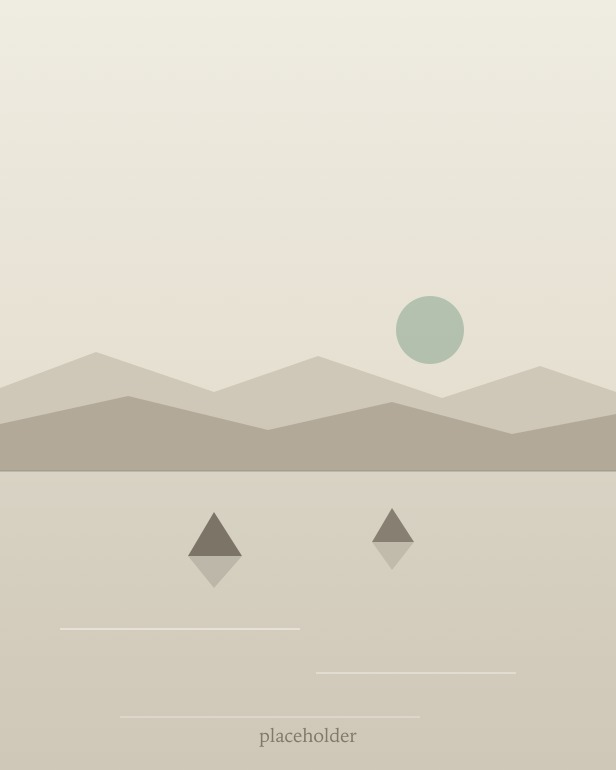

Now — archive
2026
╔══════════════════════════╗ ║ HEY YOU! YES YOU! Get ║ ║ out of reader mode, this ║ ║ site isn't designed to ║ ║ be used that way. ║ ╚══════════════════════════╝
August 31, 2026
My first entry! I'm excited to finally make progress on this site. It's been long overdue.
-
I went to Michigan for the first time. I made it to a ton of cool sights, from the gigantic Henry Ford Museum to a beautiful overlook of Lake Michigan atop a sand dune
-
I've started to learn more about AI software development. My first project will be using agentic development with Claude Code for this site
-
I finished Level 5 of the Pimsleur Spanish course
-
I've rekindled my interest in live music by seeing ALL and MCR. They couldn't have been more different, with one in a small room and one in a stadium
-
I like the idea of having small collections of vintage mechanical items. This month a friend got me interested in 90s Zippos

The Spirit of Detroit
Inside the Capitol building in Lansing
A sunset over Lake Michigan
Two vintage 90s Zippos
Kayaking in the Potomac